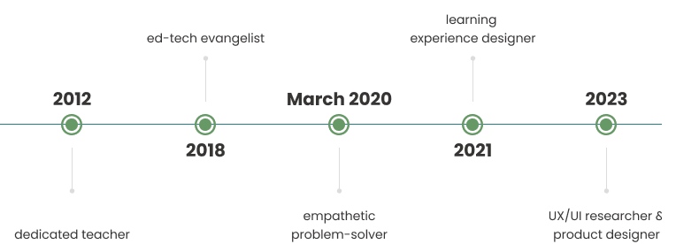

About me
I am curious about people. I care deeply about their problems.
From teaching to becoming a UX researcher and designer, my work has always been about understanding human behaviour, solving problems, and improving learner experiences.

Things I do well
Uncover
I have a knack for uncovering important issues through user research.
This is because I invest time in understanding the full context of the problem so that I'm choosing the right research methods and asking insightful questions.
Listen
Listening well takes focus and generous wait time, which takes practice, discipline, and good judgment.
Validate
I try to assume nothing and test everything. I am sceptical of easy answers and first responses. I keep track of each decision and make there is a research-backed reason for it.
Collaborate
Share achievements are so much sweeter than those at the end of a solitary path.
I know how to collaborate and communicate in a variety of team structures that results in a shared sense of empathy and an understanding of the people we are trying to serve.